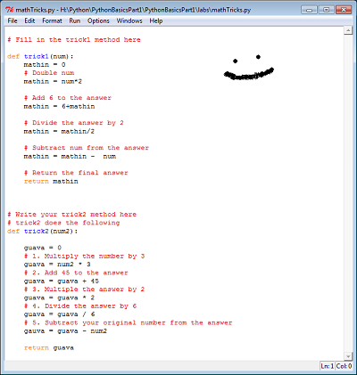
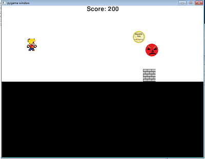
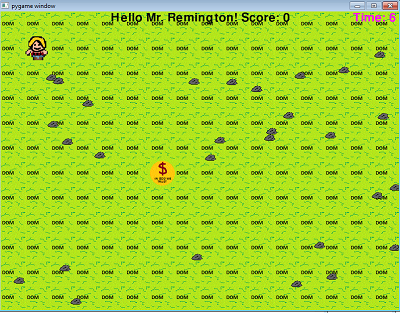
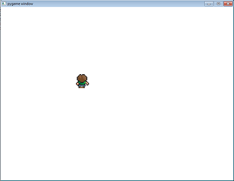
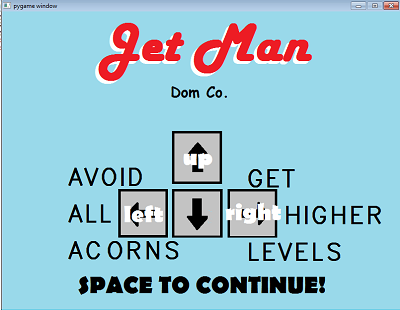

Python Content
Unit 1

Description
In Unit 1 we were introduced to Python for the first time. We did the basics like formatting the page. Also, we got the computer to add, subtract, multiply and stuff for us. Also just writing things on the page and getting user input was done. It was basically just all the very basics of Python and getting it to work on the simplest level.
Concepts learned
- We learned addition, subtraction, multiplication, and division
- I learned how to convert variables from string to integer
- I learned that to use a decimal I have to use the word float
- I learned how to use input from the user
- We learned how to print strings on the runner
Unit 2

Description
Unit 2 started with our real coding of Python. We got a little dude moving around on a screen. He began to detect things like walls and not just move through them. This person later learned how to jump which surprisingly was pretty complicated. Then we got images to move at him that he had to dodge. Another thing was the use of a variable for score that we added to our Unit 2 stuff.
Concepts learned
- We learned how to use if statements
- I learned how to upload images onto this screen thing
- I learned how to get a basic background for my game
- We learned how to collide with things
- I Iearned how to use variables to decide how many times I've performed an action
- We learned how to change variables based on certain outcomes
Unit 3

Description
During unit 3 things got crazy. My dude got to move around and get a coin. The coin once hit would move to a random location and dude needed to get the coin again. A timer entered the equation in the top right that decided how much longer you could play for. Also this was the really first time I used text that printed itself without Mr. Remington (you) coding it in prior.
Concepts learned
- This unit I learned how to use a timer
- I learned how to print text in games
- We learned how to quit the game after a certain thing happens
- I learned how to create a background very customly
Unit 4

Description
I learned even more in unit 4. A dude changed costumes in the middle of moving to make it look good. He walked around changing costumes at each click of the arrow keys. Then we used costumes to make a pretty cool background. And costumes let us make a bunch of enemies. Key word here: Costumes.
Concepts learned
- Changing the costume for one specific guy
- Creating a background that has different layers
- Making multiple versions of one dude at the same time
Final Project

Description
In the final project there was a lot of freedom to do whatever. The game had to have an introduction page that eventually goes away. The game had to encompass all other concepts from every unit. The game also could repeat and not just quit on you. And it had to have a bunch of different classes and costumes.
Concepts learned
- I taught myself how to use velocity and gravity to control a dude
- I learned how to get a starting page that ended when the user hit something
- I learned how to get the game to restart at the end
- I learned how to upload a project onto google drive